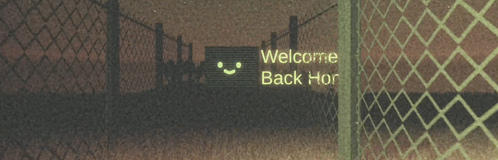

Sound of Relics - Shiloh Guo
*

Concept
On the fringes of human civilization lies a forsaken land, untouched by the grip of order. It resembles more of a place forsaken by humanity, where tales whisper of supernatural phenomena born from the tumultuous waves, capable of ensnaring the unsuspecting. Here, amidst the debris-strewn landscape, consciousness seems to flicker, whether molded by the waves or merely the descent into madness. As you navigate this eerie realm, a growing longing for your hometown inexplicably consumes you, accompanied by an unsettling familiarity that defies reason. What unfolds in the end? The answer remains shrouded in mystery.
The game is presented in an isometric perspective in which the player character is controlled.
******
PLATFORM: PC | Engine: Unity | Team Size: SOLO
GENRE: Sandbox RPG | Physics game | Exploration
.
.
.
.
Interactive System Design
* I aim to streamline the game's movement, interaction, and conversation mechanics by incorporating click-based controls. As such, I've developed the player's controller as a system that is entirely mouse-dependent.
* The player can click on the item whose cursor changes to "!". At this time, the character's sound wave machine can translate the sound covered by the object.


* Other interactable objects: Trash | Dog | Book


.
.
Environment Design